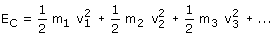
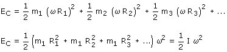

|
Energía cinética de un cuerpo en rotación La energía cinética de un cuerpo en rotación es la suma de las energías cinéticas de sus puntos materiales  Poniendo la velocidad de cada punto en función de la velocidad angular resulta:  |